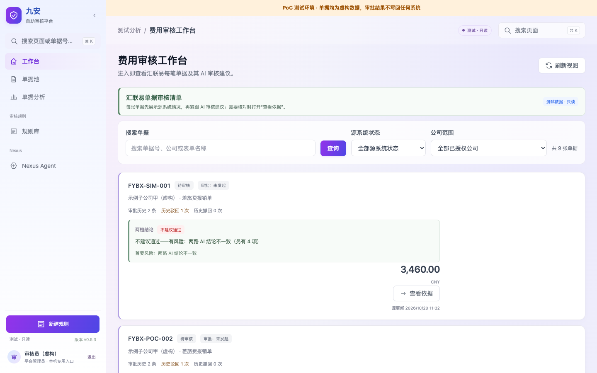
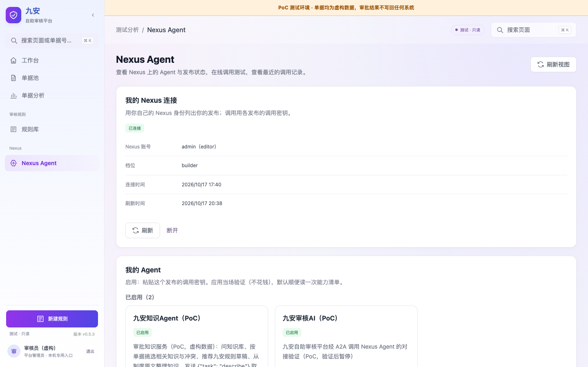

1. 一页概览
是什么：九安审核平台 v0.5.3
的原服务端和原前端，跑在一台 EC2 上（测试台）。2026-10-19
起，跑的是九安开发包的副本（.build/jiuan，source/
不动），用九安自己的运行时：MySQL
存储、平台存储、连接器、调用中间件、流水线运行器；不接汇联易和钉钉，单据是虚构的，存在实例本机的
MySQL 8.0 里。AI 能力全部在 Nexus 上，由两个 Agent 提供；PoC 服务端经
A2A 调用它们。每个应用账号用自己的 Nexus API 密钥连接，看到自己发布的
Agent，粘贴调用密钥启用后就能在页面或命令行上调用测试。

现在的状态（2026-10-19）：
| 项 | 状态 |
|---|---|
| PoC 站点 | 已上线：https://andon-finance.tinyboat.blog |
| 测试台 | 2026-10-19 升级完：t3.small 换成 t3.large（弹性 IP 没变）；本机
MySQL 8.0（Docker 容器 jiuan-）；健康检查
database: ok、source: poc-；九安平台中心能打开（卡片「汇联易单据同步」，暂停状态）。记录见
evidence/ |
| 审批流（来单 → 九安预审 → AI 初审 → 人工复核） | 可用。2026-10-18 起：来单后系统自动发起 AI 初审（失败自动重试一次），卡片上直接显示建议，一步人工复核；PoC 用「模拟来单」模拟来单；调用密钥从系统里读。注意客户规则还没有进入 AI 初审，见客户规则与 AI 初审 |
「我的 Nexus」：连接、列出、启用、换密钥、停用（接口约定
agent-） |
第一期已实现、已上线；页面上实测连接、启用、重新验证都正常；审核员已启用两个
Agent，连接用的是 builder
档位（开发测试阶段可以，上生产前改只读，见第 6 节第 5 条） |
应用自己的 Skill agent-（给 Claude
Code、Codex、Kiro CLI 用） |
已实现；2026-10-19 打包成可以安装的
Skill（SKILL.、README.、references/）。怎么装、怎么和
nexus-ai-operator 配合，见 Skills
配置指南 |
知识 Agent（pub_） |
在 Nexus 上可用；知识写在提示词里（虚构） |
Agent 接入框架（契约 jiuan.） |
设计稿 v2，待批准。契约文件 contract/
已写好、已校验；第一个任务是单据初审
first_。九安补丁 0001–0006
还没写（第二份计划），审批流现在仍由 PoC 插件调用「九安审核AI」 |
| 测试 | 单元测试 280 个：本机 269 个通过，11 个要 MySQL 的跳过（这 11 个用
poc/
在测试台上跑，2026-10-19 11/11 通过，之后这部分没改）。Skill
与命令行测试 13 个通过。2026-10-21 完整端到端测试 15 个全部通过（0
失败、0 跳过；测试只用审核员本人在前端的连接和启用）。v0.1
封板前有两次各 1 项失败，都是第 6 节第 12 条那个 Agent
输出问题，已处理 |
| 交付前评审 | 作为 PoC 可以交接维护；上生产前有 2 个 Critical、11 个 Important 要改，见第 6.1 节（I1 已在 2026-10-19 修好） |
| 代码托管 | 交接仓库 https://github.com/LiboMa/nexus-jiuan-agent-framework-poc-guide：只有交接内容（代码、两个
Skill、契约、交接文档），给客户用；由
docs/
从开发目录同步。开发仓库 https://github.com/LiboMa/nexus-jiuan-agent-framework-poc：另外还有设计稿、实现计划、进度看板、历次评估和评审记录。两个都是私有仓库。交接仓库的封板标签是
v0.（2026-10-19）、v0.（2026-10-21）和
v0.（2026-10-26，分支
release/，本版）；开发仓库停在
v0. |
九安 v0.7.10
测试台的状态（2026-11-02，main 在
3c66885，都已部署）：
| 项 | 状态 |
|---|---|
| 站点与新前端 | https://jiuan-v0710.tinyboat.blog。首页
/ 是新前端 poc/（React
19、TypeScript、Vite、Tailwind 4、TanStack Query、Radix，哈希路由；守着
CSP style-，不注入
<style>），有自己的登录页；旧的口令页
/ 照旧，跳到
/；九安原来的页面在
/。页面：工作台、单据池（只有对公付款单）和单据抽屉、知识库、我的规则、Agent
接入、设置（一期只链到 /
和 #platform）。说明见 PoC
说明「九安 v0.7.10」 |
| 人工复核 | 在单据抽屉里「采纳 AI
建议」或「改判」，只记在测试台（/），不回写汇联易 |
| 审核 Agent | 「九安审核AI（PoC）」pub_
是「Agent 接入」页上的审批 Agent。线上是
jiuan-（发布修订号
18），思考强度 high（原来
xhigh），动态配置里工具 0 个（原来手工加的 15
个已清掉，要恢复只能在 Nexus 网页上重新加）。发布实际跑的模型是
global.；提示词元数据里写的是
${AGENT_（环境配置里是
opus-5-5），那只是元数据，两者对不上。一轮 7–20 秒，查库 1–2
次。每次改线上提示词留一个目录在
audit- |
| 时限 | 一轮 AI 独立建议 180 秒（补丁 0006，只改测试台副本的
review_；九安上游的契约还是 120
秒）；调用中间件给 nexus- 200 秒（补丁
0007），超时报 AI_；外壳给一轮的租约 420
秒 |
| 知识库 | PG 方式。测试台经 A2A 调 PG 知识库 Agent「知识库文档管家（PG
版）」pub_（kb.），它的调用密钥由项目负责人在「Agent
接入」页启用；这个 Agent 的代码在
knowledgebase-（2026-11-02
已从分支 feat/ 合进
main）。有效的规则是审批风险判断卡 risk-（449
条）；V4.0 审批矩阵 finance-
已下线（可恢复，没删）。向量 2026-10-31 起由另一个会话换成 Cohere Embed
v4。见第 2.2 节和 kb/GUIDE.md 7.6 |
| 账号 | 见第 2.4 节 |
| 测试 | run07. 端到端：2026-11-01 完整运行 26 条，25
通过，那 1 条（知识库 Agent 回复前多一句话）已修；之后知识库的 4
条、单据池的 6 条单独重跑全部通过。完整跑一次约 1–3 美元的 Nexus
调用 |
| 未完成 | 第 6 节第 13 条起 |
页面长这样（2026-10-17 截自线上，数据都是虚构的）：


一句话的交接要点：Markdown 文档是唯一的源；部署只用
poc/infra/deploy.sh；Agent 的调用密钥和 Nexus 的 API
密钥由各账号在前端「Nexus
Agent」页自己加载，加密存在实例上，加、换、停用都不用部署或重启；应用自己的启动配置（两条口令、REGISTRY_KEY、测试台的三项密钥）只在本机的
poc/infra/secrets.env，不进构件、不进文档、不贴进对话；九安开发包只读，服务端跑的是打过补丁的副本，前端改动靠锚点补丁生成。
2. 资产清单

2.1 代码与目录
都在本机的
~/MyDev/LLM/Nexus-AI-strands/application-deploy/audit-nexus/
下。
| 路径 | 内容 | 谁维护 |
|---|---|---|
poc/ |
PoC 服务端、前端扩展、示例附件、单元测试与端到端测试（代码地图见架构文档第 8 节） | 应用开发 |
poc/ |
「我的 Nexus」：每个账号的连接、启用、加密存储、验证 | 应用开发 |
poc/ |
A2A 客户端、模型客户端、调用测试、附件、运行记录 | 应用开发 |
poc/ |
审批流状态机与接口 | 应用开发 |
poc/、poc/ |
测试台的组合根：九安 MySQL
存储（store.）、九安平台（platform.）、种子单据与模拟来单的写入（state.）、九安配置（settings.）；jiuan-
从九安副本载入模块 |
应用开发 |
poc/ |
前端扩展（nexus-、nexus-、nexus-） |
应用开发 |
poc/ |
用锚点补丁从九安原前端生成前端副本 | 应用开发 |
poc/ |
build-：从九安开发包复制
code/ → 按顺序打补丁 → 装上锁定版本的
mysql2 3.14.3，输出到
. |
应用开发 |
. |
生成物（九安副本 + 补丁 + 依赖）；deploy.
每次重建，不要手改 |
— |
poc/ |
九安 v0.7.10 测试台的外壳（server.
组合根，口令登录、进程内假汇联易、出网守卫，「Agent
接入」页的后端：nexus-
发布列表、agent-
测试、agent-
调用记录、agent- 审批流路由；「规则库 ›
制度知识库」页的后端：kb-
上传 / 历史 / 制度清单 / 下线 /
检索接口、kb- 经 A2A
调知识库 Agent（kb.），2026-10-30
起测试台不再直连 PG；新前端用的接口：reviews.
复核、dashboard.
工作台、advice- AI
轮次、evidence-
原件分页、front. 在 /
给新前端）；poc/
构建九安 v0.7.10 副本到
.（生成物，不要手改） |
应用开发 |
poc/ |
九安 v0.7.10
测试台的新前端（React，哈希路由）：npm ci && npm test && npm run build；poc/
每次都先构建它，dist/ 随构件发出 |
应用开发 |
patches/ |
打进九安 v0.7.10 副本的补丁 0001–0007，按文件名顺序：连 Nexus
列发布；「Agent 接入」页；启用即就绪、审批流只调管理员指定的一个审批
Agent；「规则库」分「审核要点」「制度知识库」两页（public/）；规则页跟着知识库方式走、「我的规则」；review_
的时限 180 秒；nexus- 的时限 200 秒 |
应用开发 |
audit- |
审核
Agent「九安审核AI」的提示词（v3：信封模式、review_、只读查知识库，第
1 次查询用 kb_）、下发脚本
apply.（写提示词并重存发布的动态配置）；prompt-：每次改线上提示词的改前、改后、比对、下发记录（回退用改前那份） |
Agent 开发 |
kb/ |
知识库部署工具（原
pgvector-，2026-10-26 并入）：PG +
pgvector 容器、库内语义检索 kb_、Nexus
数据连接器、规则入库、Agent 提示词受管规则、核对。测试台上用
poc/
驱动（从栈里取实例和网段）；完整说明在
kb/。kb/：把审批风险判断卡的
HTML 转成可入库的 .docx（只有代码，原页面和转出来的文件不进仓库） |
运维、Agent 开发 |
patches/ |
打进九安副本的补丁，按文件名顺序。现在还没有这个目录，第二份计划写 0001–0006 | 应用开发 |
contract/ |
Agent 接入框架的契约：信封、名片要求、错误码、任务目录、审批流接口 | 应用开发、Agent 开发 |
poc/ |
CloudFormation
模板、deploy.、destroy.、backup.（升级前备份）、upgrade-（换实例类型）、bench-（在测试台上跑要
MySQL 的测试）、bench/（实例上的 MySQL
安装、配置、重置脚本与 systemd
片段）、secrets.（只在本机，0600） |
运维 |
skills/ |
Nexus 一侧的 Skill（1.1.0，从 Nexus-AI
项目复制，不带任何密钥）：编码工具用它在 Nexus 上建
Agent、发布；deploy. 也从这里取
scripts/ 打进构件 |
Agent 开发 |
skills/ |
应用自己的
Skill：SKILL.（给编码工具读）、README.（给人读）、scripts/（Python
3.9
标准库）、references/（接口约定、配方）、tests/（13
个） |
应用开发 |
knowledge- |
知识 Agent 的提示词（prompt.
v2，prompt-）与维护说明 |
Agent 开发 |
docs/ |
交接文档：docs/
是交付文档，另有架构文档和开发者工作流；docs/
生成
HTML。设计稿、实现计划、进度看板、历次评估和评审记录只在开发仓库 |
全员 |
evidence/ |
各轮的截图与测试证据；bench/ 是 2026-10-19
测试台升级的记录与日志；e2e/
是最近一次端到端测试的结果 |
— |
archive/ |
不再使用、只留作记录的旧证据、旧包、建 Agent
时的调用记录、测试台升级的执行记录（说明见
archive/）；不进交付包 |
— |
VERSION、CHANGELOG.、README.（根目录） |
版本号
Finance-、每个版本改了什么、包的入口说明 |
应用开发 |
source/、source/ |
九安原开发包。只读，不改，不执行其中脚本；v0.7.10
的 seeds/、database/
含真实数据，不打开、不复制 |
九安 |
另外两处本机依赖：
- nexus-ai-operator：用仓库里的
skills/nexus-ai-operator/（1.1.0），deploy.sh只打包其中的scripts/nexus.py；要换版本用环境变量NEXUS_OPERATOR_SCRIPT； - 本机 operator 凭证
~/.nexus/：不读、不复制、不打印。
2.2 线上环境
AWS 账号 533267047935，区域
us-east-1。交接仓库和交付包里，本节和全文的 AWS 账号与 EC2
标识（实例、IP、VPC、子网、安全组、快照、卷、构件桶、CloudFront
分发、托管区、证书）都已换成 AWS 文档的示例值，比如账号
123456789012、实例 i-0123456789abcdef0。
| 资源 | 值 |
|---|---|
| CloudFormation 栈 | andon-（模板
poc/） |
| EC2 | i-，t3.large（2026-10-19
起是测试台），Amazon Linux 2023，Node 24，systemd 服务
andon- |
| MySQL | 实例上的 Docker 容器 jiuan-（mysql:8.0，只听
127.0.0.1:3306），数据目录
/，库
jiuan_；端到端测试前用
bench/ 重建这个库 |
| 九安 v0.7.10 | 同一台实例：systemd 服务 andon-（系统用户
jiuan07，只听 127.0.0.1:4181，屏蔽 IMDS），程序
/
+ 九安副本；PoC 进程按 Host 把
jiuan-
的请求转过去（poc/），安全组不变；第二个
CloudFront 分发。库 jiuan07（同一个
jiuan- 容器，账号
jiuan07_）；配置与密钥文件
/；工作目录
/（nexus/
是「Agent 接入」页连 Nexus
的凭证，seed-
是种子单据的时间锚点）。端到端测试前
bench/ 重建
jiuan07 库，保留启用记录（含审批 Agent）和 Nexus 连接 |
| 知识库 | 同一台实例上的 Docker 容器
nexus-（pgvector/，只绑实例私网
IP 的 5432），库 nexus、表
approval_（制度原文不进仓库。2026-10-31
起有效的是审批风险判断卡 risk-，449 条；原来的
102 条 finance-
已下线，可恢复）；容器里装了 PL/Python，库内语义检索
kb_ 用实例角色调 Bedrock 生成向量（原来是 Titan
v2，栈里的 KbBedrockPolicy 只许这一个模型；2026-10-31
另一个会话把它和 KbBedrockPolicy 一起换成了 Cohere Embed
v4），另有上传历史 kb_、检索日志
kb_。经 Nexus 的 PostgreSQL
数据连接器接到「九安审核AI」，Agent 只读查询；PG
端口的入站规则归测试台的栈（KbAllowedCidr）。部署与核对：bash poc/，说明见
kb/。上传、检索在新前端的「知识库」页（九安原来的「规则库
› 制度知识库」页也行），2026-10-30 起都经 PG 知识库 Agent
pub_。向量是 Cohere Embed v4（1024
维）；kb/ 与栈模板 2026-11-02 起从分支
feat/ 合进 main，从本仓库跑 db
阶段要 kb/ 的
EMBED_ 是 Cohere
v4（防混用检查，kb/ 7.6） |
| 公网 IP | EIP 13.；安全组只放
CloudFront 回源前缀列表 pl- 访问 4180，不开
22 |
| 构件桶 | andon-：releases/、releases/、secrets/（SSE） |
| CloudFront | E92MPQ217VIPX，站点
andon-，回源
andon- |
| 运维通道 | 只走 SSM（Run Command、Session Manager）；实例角色禁止读 SSM 参数 |
| 实例上的目录 | /（当前版本）、/（上一次启动前的版本；服务崩溃循环时会被覆盖，回滚要用构件桶里的归档包）、/、/（测试台的三个密钥文件，root:andon
0640）、/（各账号数据） |
2.3 Nexus
https://nxs-beine1013.tinyboat.blog，v0.3.28。（线上 Nexus AI 的实际地址：https://d3u3hj2us186y.cloudfront.net/）
| 对象 | 编号 | 用途 |
|---|---|---|
| 九安审核AI（PoC） | Agent agent_，发布
pub_ |
审批建议、草稿核验；审批流在用（栈参数
AdvisoryPublicationId）。调用密钥取自账号在「我的
Agent」里对它的启用：先用发起人本人的，再用别的账号的，所以至少要有一个账号启用它 |
| 九安知识Agent（PoC） | Agent agent_，发布
pub_ |
describe / answer / select /
suggest_ / propose |
| 知识库文档管家（PG 版） | 发布 pub_ |
九安 v0.7.10
测试台读写知识库都经它（A2A，kb.：describe、ingest、list、detail、deactivate、restore、delete、check、search）；调用密钥在「Agent
接入」页启用，它就绪、不进审批流。代码在
knowledgebase-（2026-11-02
合进 main） |
两个发布都打开了 A2A 和 MCP；PoC 只用 A2A。这套 Nexus
用的是旧部署模板（/a2a 经前端反代，请求体上限 10 MB），所以
PoC 把附件合计限在 6 MB。
2.4 账号
| 账号 | 在哪 | 说明 |
|---|---|---|
poc-（审核员）、poc-（复核人） |
PoC 站点 | 虚构账号，口令在
secrets.；端到端测试也用这两个账号 |
admin（editor） |
Nexus | 发布者账号；审核员在 PoC 上连接的就是它 |
| 九安 v0.7.10 测试台上的角色 | jiuan-v0710 站点 | poc-
显示为「审核员（虚构）」，角色是管理员（admin），什么都看得到；poc-
显示为「复核人（虚构）」，角色是分析员（analyst），没有知识库、Agent
接入、设置。九安的 policy_
角色没有分到任何公司，它的单据池和工作台是空的。新接口都按「这个人的公司
∩ 测试台的公司」过滤 |
2.5 密钥清单
只写位置和用途，不写值。密钥分两类：Agent 和 Nexus
的密钥由用户在前端加载，不放进任何文件；应用自己的启动配置放在
secrets.env。
Agent 和 Nexus 的密钥（用户在前端加载，不在
secrets.env 里）
| 名字 | 在哪 | 用途 | 怎么加、怎么换 |
|---|---|---|---|
| 各账号的 Nexus 连接 | 实例
/ |
按这个账号自己的 Nexus 身份读发布列表 | 用户在「Nexus Agent」页 ›「我的 Nexus 连接」填自己的 API 密钥（或
agent_）；页面上「断开」；Nexus
上停用 API 密钥 |
| 各账号启用的调用密钥 | 实例 users/（用
REGISTRY_ 加密） |
调用测试，以及审批流（先用发起人自己启用的「九安审核AI」，没有就用别的账号启用的） | 用户在「我的 Agent」里「启用」时粘贴（或
agent_），当场验证；页面上「换密钥」「停用」。不用改文件、不用部署、不用重启 |
operator 的 API 密钥 claude_ |
本机 ~/ |
本机 nexus-ai-operator 建 Agent、发布 | 一直用到过期；上生产前统一清理 |
旧的共享 CLI 连接 jiuan- |
实例
/ |
第一期之前用的，已不用 | 开发测试阶段不用管；上生产前统一清理 |
应用的启动配置（poc/infra/secrets.env）
样例：poc/infra/secrets.env.example，里面没有任何真实的值。
流向：本机 poc/infra/secrets.env（0600）→
deploy.sh 上传到构件桶
secrets/secrets.env（服务端加密）→ SSM
在重启服务之前装到实例的
/etc/andon-finance/secrets.env（root:andon 0640）→
bench/bench-configure.sh 把三项 BENCH_* 再写成
/etc/andon-finance/bench/ 下的三个文件 →
服务启动时读一次（POC_SECRETS_FILE、BENCH_SECRETS_DIR）。
| 键 | 实例上在哪 | 谁读 | 怎么来 |
|---|---|---|---|
REVIEWER_、CHECKER_ |
/ |
服务端（口令登录，至少 12
个字符）；端到端测试（run. 读出来传成
E2E_、E2E_） |
自己定，或 deploy. 第一次运行时生成 |
REGISTRY_ |
同上 | 服务端：加密各账号 enabled. 里的调用密钥 |
缺了 deploy.
自动补（openssl rand -）。换掉它，所有账号都要在页面上重新启用
Agent |
BENCH_ |
/ |
MySQL
容器（建库）、bench-（重建库） |
缺了自动补（openssl rand -），只补不换 |
BENCH_ |
/ |
MySQL 容器（建应用账号）、服务端（连库） | 同上 |
BENCH_ |
/ |
服务端（打开九安的库） | 缺了自动补（openssl rand -）。永远不要换：九安会用它核对库里的连接行，换了整个库就打不开 |
旧文件里如果还有
NEXUS_API_KEY、NEXUS_A2A_KEY_…、E2E_KNOWLEDGE_A2A_KEY、E2E_NEXUS_API_KEY
这几行，都可以删掉：Agent
的密钥已经改成在前端加载，端到端测试也用审核员本人在前端的连接和启用。
操作：
- 新环境：最省事是不建这个文件，直接运行
poc/infra/deploy.sh，它会生成两条随机口令、REGISTRY_KEY和三项BENCH_*。要自己定口令，就cp poc/infra/secrets.env.example poc/infra/secrets.env && chmod 600 poc/infra/secrets.env，填好两条口令，其余保持注释。 - 改口令：改本机文件，再
deploy.sh --code-only；服务重启后生效。 - 测试台的三项密钥：只补不换。实例上已有的只认原值，
secrets.env里的不一样时，部署在重启前就失败、服务照旧跑（运维第 2.7 节）。 - 交接：整个文件当面交接。丢了
BENCH_DATA_KEY，测试台的库就打不开。
规则：
- 调用密钥只能由 Nexus 网页登录的本人签发，Operator 和 API
密钥签发都会被拒（Nexus 代码
api/v2/services/access_credential_service.py:283-286）。 - 开发测试阶段：给出的密钥一直用到过期，不主动吊销、不轮换。 Agent 用的调用密钥一律由用户在前端加载、从系统里读（页面上的启用记录），不另放。轮换与清理放到上生产前统一做（第 6.1 节第 8 条）。
2.6 并入九安时：调用密钥与「Agent 接入」
2026-10-19 定：九安里审核 Agent 的调用密钥从启用记录读，和第 2.5 节的规则一样，不另放密钥文件。
- 服务端（必须做）：九安平台中心加「Agent 接入」：
- 管理员填发布编号、粘贴这个发布的调用密钥；
- 九安当场检查两件事，都不花钱：名片描述里有契约和任务列表（
contract/envelope/v1/card-requirements.json）；用这把密钥发一个tasks/get，Nexus 认它； - 通过后加密存进九安自己的存储；
- 一个发布一把密钥（每把调用密钥只对一个发布有效）；初审的路由表只从已启用的发布里选；
- Nexus 回 401 时，把这把标成「密钥失效」，在页面上换一把。
- 接口：沿用 PoC 已实现的 agent-access-v1
里启用的那部分：启用、换密钥、停用、不带密钥重新验证。参考代码是
poc/app/access/下的me.mjs（enable、disable、refresh、credentialFor、markInvalid）、verify.mjs、crypto.mjs、routes.mjs。 - 界面（可选）：九安开发者自己写；也可以复用
PoC「Nexus Agent」页「我的
Agent」卡片的逻辑（
poc/app/public-src/nexus-poc.js：待启用 › 启用 › 粘贴调用密钥、换密钥、停用）。 - 和 PoC 的区别：PoC 是每个账号各自启用；九安这里是平台级的，由管理员为整个平台启用。每个账号连接自己的 Nexus（「我的 Nexus」）仍按并入九安的第三期。
这是 Agent 接入框架的通用部分，以后所有类型的 Agent 都这样启用。细节见Agent 接入框架第 3、6 节。
3. 文档索引（推荐阅读顺序）
- 本文。
- 架构、模块与工作流：线上跑着的样子、每个模块、调用链。
- 快速上手：给前端用户，一步步把前端接上 Nexus 上的 Agent。 开发者快速对接指南：给九安的前后端开发，一个业务需求从写契约、在 Nexus 上开发 Agent，做到后端调用、前端可用，每步配 Claude Code 提示词。 Skills 配置指南：在编码工具里装好、连好 nexus-ai-operator 和 agent-access。
- 以补丁和独立模块的形式并入九安：交付给原应用的两种方式与推荐做法。
- 各类 Agent 怎么经 A2A 接进九安（设计稿）：Agent 接入框架总览（HTML） → Agent 接入框架：架构、工作流与交付接口 → Agent 接口 → 第一个任务单据初审。
- 部署与迭代规范：每类变更怎么改、怎么测、怎么发、怎么回滚。
- 运维与后续迭代：日常操作手册、故障排查、迭代的最佳方式。
- 客户部署路线：从 v0.1.0 到九安上线的五个阶段、部署工具包、第一周做什么。
- 开发者工作流：一个
Agent 从建好到在前端可用的全过程；接口约定 agent-access-v1 见
skills/agent-access/references/interface.md。 - 使用说明：PoC 说明、部署说明、知识 Agent 说明、审核 Agent 说明、知识库的 kb/README.md 与 kb/GUIDE.md。
每份交付文档都有同名的 HTML 版本，由 docs/build-html.sh
从 Markdown 生成。
4. 职责划分
| 事项 | 负责 | 需要确认 |
|---|---|---|
| PoC 服务端、前端扩展、命令行 | 应用开发 | 项目负责人确认端到端测试结果后才能发布 |
| Agent 提示词、发布、能力清单 | Agent 开发（用 Operator Skill） | 应用开发跑一次调用测试 |
| 调用密钥签发（开发测试阶段用到过期，不主动吊销） | Nexus 账号本人（网页） | — |
secrets.、部署、回滚、实例 |
运维 | 项目负责人 |
| 九安开发包升级 | 九安提供；应用开发重做锚点补丁 | 端到端测试 |
| 线上端到端测试（会重建测试台的库、产生费用） | 应用开发 | 运行前通知在用的人 |
| 测试台的换型、停机、变更集 | 运维 | 每一步动手前项目负责人当场同意 |
固定规则（不会变）：
- 四步使用逻辑：开发者用 Operator 构建 Agent、发布、拿调用密钥 → 前端经 A2A 自动发现并加载测试 → 用 vibe coding 优化调用和界面 → 测试、上线。知识和 Agent 在一起（在 Nexus 上），前端只做调用。
- 提交前：端到端测试完成、项目负责人确认之后再推送，不是开发完测完就提交。
- 密钥：开发测试阶段，给出的密钥一直用到过期；Agent 的调用密钥从系统里读（页面上的启用记录），不另放、不主动吊销。
5. 接手第一周
6. 交接时的未完成事项
按紧急程度排列。
- 构件和健康检查还不带提交号（评审 C1
的后一半）：代码已经进了私有仓库（交接仓库的标签
v0.1.0），但deploy.sh的归档包名和健康检查里还没有提交号，线上跑的是哪个提交要靠时间对。见部署与迭代规范第 2 节。 - CloudFront 到源站是明文 HTTP（评审 C2）：登录口令、会话、用户粘贴的密钥在这一段上没有加密。PoC 只有虚构数据，开发测试阶段可以接受；上生产前必须改成 HTTPS。
- 部署脚本还剩一个缺口（评审
I2）：服务崩溃循环会覆盖实例上的
previous，回滚只用构件桶里的归档包。（I1 已修好：SSM 不是Success，deploy.sh就报失败。） - 值班看不到问题（评审 I6）：健康检查只看服务是否就绪；调用密钥失效、Nexus 调用失败都不会让它变红，日志里也没有。每天要实际发起一次审批看看。
- 上生产前要做的密钥事项（开发测试阶段不用动）：审核员连接
Nexus 用的是
builder（可写）档位，上生产前改成只读（评审 I4）；统一清理 operator 的 API 密钥claude_code、旧的共享 CLI 连接jiuan-audit-host和secrets.env里不再用的几行。 - 上生产前必须改的：见第 6.1 节。
- 初审 MVP（第二份计划）：Agent 接入框架设计稿待项目负责人批准；批准后写九安补丁 0001–0006（通用的 Agent 接入、任务调用、规则、初审与审批流、界面）。在这之前，客户规则不进 AI 初审（客户规则与 AI 初审）。
- 审批记录还在内存里：单据和模拟来单已经在 MySQL 里，重启不丢；审批记录、登录状态和运行记录重启后清空。初审 MVP 里审批状态改存九安的存储。
- 测试台的小缺口：九安左侧导航还没有「平台运行」分组，平台中心只能经地址
#platformAgents打开；测试台的 MySQL 数据只在这台实例的数据卷上，实例被替换前先跑poc/infra/backup.sh（运维第 2.6 节）。 - 业务网关层以后再做：多轮会话、延后结果、分区与串联、整个租户范围的任务、按次配额（Agent 接入框架第 0 节）。
- 测试台评审的 Minor（12
个，都不影响现在的使用，按需要再改）：
- 来单编号第一次并发取号可能死锁一次（回 500，再点一次就好）；
- 连上 MySQL 之后的启动步骤失败会让进程退出；
- 模拟来单先写单据、后存原文，按单据号查找时没核对单据号；
- 写入失败时批次停在「运行中」；
- 种子单据共用一个采集时间，单据池的顺序和内存模式不一样；
bench-reset.sh的 SQL 失败时服务停着不开；run.sh不打印 SSM 输出，看不出是重置了还是退回重启；- MySQL 容器挂进了整个测试台密钥目录，应该只挂两个密码文件；
build-jiuan.sh只看mysql2的版本决定要不要npm ci；- 换型脚本只检查实例这一个资源；
backup.sh默认第一块卷是根卷；- 测试台打开九安存储时没带上部署方式，环境里多出的
MYSQL_URL会把它指到别处。 - 另外：九安左侧导航没有「平台运行」分组（见第 9 条）。
- 「九安审核AI」偶发返回不合法的
JSON（已处理，2026-10-20）：Agent 曾在 JSON
字符串里直接写未转义的英文双引号，九安按规定拒收（
AI_INVALID_RESPONSE）。现在发给 Agent 的每条请求都带一段输出规则（nexus/a2a-client.mjs的buildPrompt：只输出一个 JSON 对象；字符串里不用英文双引号，引用一律用「」）；端到端测试第 5 项一显示失败就带错误码报出来。改完之后完整端到端测试 15 个全部通过。模型仍可能偶尔不守规则，审批流会自动重试一次；调用测试面板失败时再点一次发送就行。
九安 v0.7.10 测试台的（2026-11-02 记）：
- （已解决，2026-11-02）分支
feat/pg-kb-steward已合进 main：PG 知识库 Agent（knowledgebase-writer-agent-pg/）、整库 Cohere Embed v4 的kb/（防混用、迁移、回退，kb/GUIDE.md7.6）和栈模板里的KbBedrockPolicy都在本仓库了。之前「只用--code-only、不跑知识库 db 阶段」的限制取消；跑 db 阶段前确认kb/deploy.env的EMBED_MODEL_ID是 Cohere v4（缺省就是）。 - 九安上游的
review_advice@1时限还是 120 秒：带知识库查询的真实审核一轮要 15–120 秒，测试台用补丁 0006、0007 放到 180 / 200 秒。建议九安在自己的契约里调高（开发者快速对接指南第 5.1 节、第 11 章）。 - 审核 Agent 的模型对不上：发布实际跑
global.anthropic.claude-sonnet-5，提示词元数据里是${AGENT_MODEL}（环境配置里是 opus-5-5），只是元数据。以哪个为准，等项目负责人定。 - 发布上手工加的 15
个工具已清掉（
s3vectors_*、http_request_tool等，在名为demo的配置里）：本仓库没有它们，要恢复只能在 Nexus 网页上重新加。注意audit-agent/apply.py在 pg 方式下每次下发都按CONFIG_TOOLS（现在是空的）重写工具清单：加回去以后，下次下发前先改CONFIG_TOOLS，否则又会被清掉。 kb/deploy.sh verify --e2e现在会失败（另一个会话在用它）：它要规则问答命中C03-1.2，而那份审批矩阵finance-approval-v4已下线。矩阵重新上线或改掉期望值之前，别把它当成故障。审批矩阵重新上线时，审核 Agent 提示词第 9 条 c ② 也要改（审核 Agent 说明「知识库（pg 方式）」）。- 工作台「最常引用的规则」只认
C…/G-…编号：风险判断卡的risk-cards-T…还不算进去。 - 出包的白名单里没有
poc/web07/：docs/delivery/make-package.sh还没有copy poc/web07（也没跑它的测试），出包、导出交接仓库前要补上。 - 项目负责人要在自己的浏览器上确认：「Agent 接入」页的密钥框上，Chrome 还会不会弹「保存密码」。
- S3 Vectors
方式的知识库只有代码，没上线：它的文档管家用的规则请求说明和 PG
版是同一段，回复前多一句话的问题它也会有；测试台的客户端两种方式都放过这种回复（
POC_KB_AGENT_REPLY_LEADIN）。
已经解决的（2026-10-20）：
- 工作流文档按应用现状更新：Agent
的调用密钥在前端加载，
secrets.env只放应用的启动配置；端到端测试只用审核员本人在前端的连接和启用；deploy.sh新建secrets.env时不再写调用密钥那一行。 - Agent 输出不合法 JSON（第 6 节第 12 条）：请求里加了输出规则，完整端到端测试 15 个全部通过。
- 交接仓库：https://github.com/LiboMa/nexus-jiuan-agent-framework-poc-guide，只有交接内容；AWS
账号与 EC2 标识已脱敏；有
secrets.env.example。
已经解决的（2026-10-19）：
- 测试台升级：升级前备份（根卷快照
snap-03051c671bc2738a0，实例上打包了账号目录）→ 停机换型到 t3.large → 先按内存存储部署、装好 MySQL → 在测试台上跑要 MySQL 的测试（11/11，4 次故意改坏代码都被抓住）→ 切到 MySQL → 端到端测试 15 通过、0 失败、1 按设计跳过。各账号的连接与启用都没变。记录在evidence/bench/2026-10-19-upgrade.md。 - 部署能看出安装失败（评审
I1）：
deploy.sh检查 SSM 的执行结果，不是Success就报失败。 - 测试台的最终评审（3 个
Important，每个都先写了会失败的测试再修；2026-10-19 已部署，SSM 结果
Success，健康检查
database: ok）：- 实例上已有的测试台密钥只认原值：
secrets.env被重新生成或改过时，部署在重启前就失败，服务照旧跑；BENCH_DATA_KEY格式不对也不写； - 健康检查真的去查库：库断了
/api/health回 503，database是unavailable； - 回到内存存储不碰 MySQL：MySQL 坏了也能用
POC_STORE=memory deploy.sh --code-only退回来。
- 实例上已有的测试台密钥只认原值：
- 端到端测试不再重启服务：开始前用
bench/bench-reset.sh重建测试台的库（重建失败才退回重启）。 - Agent 接入框架：设计稿 v2
与契约文件（
contract/），按通用框架设计，以后的财务、知识库等各类 Agent 都用同一套信封和任务目录。 - 应用自己的 Skill：
skills/agent-access/打包成可以安装的 Skill（SKILL.md、README.md、references/），有测试检查它和命令行脚本一致；两个 Skill 的配置写进 Skills 配置指南。 - 代码进 Git（评审 C1 的前一半）：交接仓库 https://github.com/LiboMa/nexus-jiuan-agent-framework-poc-guide（只有交接内容；标签
v0.1，2026-10-21 起v0.1.0），开发仓库 https://github.com/LiboMa/nexus-jiuan-agent-framework-poc（标签v0.1）。 - 整理：第 2–4 轮的原始接口返回、10-17 和 10-18
的旧包、建 Agent 时的调用记录、测试台升级的执行记录移进
archive/（不进交付包，引用它们的历史文档已改链接）。
已经解决的（2026-10-18）：
- 审批流的调用密钥：改为从系统里读：先用发起人在
Agent 页启用的那把，没有再用别的账号启用的，最后才用
secrets.env兜底（这个兜底 2026-10-20 起也不用了：调用密钥一律在前端加载）；Nexus 回 401 时只把用到的那一把标记失效。线上验证：secrets.env里那把 Nexus 已不认，审批流照样走通。 - 完整端到端测试：14 通过、0 失败、1 按设计跳过。
- 被端到端测试删掉的知识 Agent 启用：已由本人重新启用；测试也改成了只用、不动本人启用的项。
6.1 上生产前必须改的
来自 2026-10-17 的交付前代码评审（评审记录在开发仓库），编号沿用评审里的：
| 编号 | 问题 | 现在 |
|---|---|---|
| C1 | 没有版本管理，也没有版本标识 | 代码已进 Git（交接仓库标签
v0.）；构件和健康检查还不带提交号 |
| C2 | CloudFront 到源站是明文 HTTP，走公网 | 没改 |
| I1 | deploy. 没部署成功也可能报成功 |
已修好（2026-10-19） |
| I2 | 每次服务启动都重新拉包，崩溃循环会毁掉回滚点 | 没改；回滚只用构件桶里的归档 |
| I3 | 只给测试用的真凭证被装到了公网主机上 | 没改 |
| I4 | 没有强制 Nexus 连接用只读档位；CLI 的凭证明文落盘 | 没改 |
| I5 | 调用测试的「审批建议」模式，会把单据事实发给用户启用的任何 Agent | 没改；要加发布白名单 |
| I6 | 值班看不到问题 | 没改 |
| I7 | 前端补丁的检查只看锚点和语法 | 没改 |
| I8 | operator 脚本没钉版本，也没有合同测试 | 一半：仓库里固定为
skills/
1.1.0；合同测试没做 |
| I9 | 测试关卡不在生产的运行时上跑 | 没改 |
| I10 | 唯一的集成关卡是在唯一的线上环境跑端到端测试 | 没改 |
| I11 | 主机从不打补丁 | 没改 |
按这个顺序改：
- 版本（C1）；
- 传输加密（C2）；
- 持久化：审批记录、运行记录、限流放进九安的 MySQL 存储，运行记录带公司、按公司过滤；
- 每个账号的 Nexus 数据改存数据库、信封加密，强制只读档位（I4）；
- 去掉 PoC 脚手架：口令登录、种子数据、内存存储、
exchange的回环绕过； - 模型调用走九安的
ai-model连接器； - 「审批建议」模式的发布白名单（I5）；
- 密钥：服务端和测试的分开（I3），静态加密用
KMS，
REGISTRY_KEY能轮换，清理第 2.5 节列的旧凭证； - 可观测性（I6）；
- 流水线（I1、I2、I8、I9、I10）；
- 主机（I11）。
九安自己部署时（客户部署路线），第 3–8 条由框架补丁在九安里实现；第 1、2、10、11 条只关我们自己的测试台。
7. 交接确认
| 项 | 交出 | 接收 | 日期 |
|---|---|---|---|
| 代码与文档（第 2.1 节） | |||
| 两个 Skill（Skills 配置指南） | |||
| 测试台（第 2.2 节；MySQL 与三项测试台密钥） | |||
| AWS 与 Nexus 权限（第 2.2、2.3 节） | |||
secrets.（当面交接） |
|||
| 未完成事项（第 6 节） | |||
| 端到端测试结果与截图 |